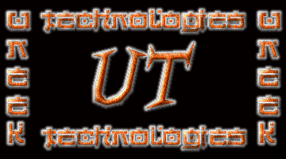

Just gotta clear up a few things posted on a defacement by codeman earlier. First, neeper is not our founder he is just a member of the team like everyone else, we really have no founder, we were just started by a group of people with the same interest in computers, and most were in a former group together. Second, we really have no specific "Jobs" within the group, yes some of us program, some hack, some do art, some may do all, but everyone is not really classified under a specific category. And Third, he forgot to list some members on his defacement, since you already have seen some of the names, we might as well at this time give you the full current list of members (see below) -Uneek Technologies- un33kt3ch@hotmail.com
lyp0x/secto0r/codeman/syxx/vo0do0/da^bomb/neeper/k0ldkutta/ps911/m0zy
In The News
A challange Eh? I'm sure most in the community are up to the challange.
Software company challengers
hackers
Crackers will be challenged to break into a new software product
designed to block attempts to change the content of Web sites.
The software, called SecurePage, comes from Australian company Creative Digital Technology. Its chief operating officer, Philip Burton, is so confident it can secure web sites that he told the Australian newspaper: "We are prepared to stand behind that financially by offering a prize to universities to see if they can do what our developers haven't been able to do."
The company says none of their software developers have yet been able to alter sites that used the system.
Net graffiti
Crackers attacking Web pages replace them with their own, often embarrassing, content. Recent high profile victims are the CIA, Net security company Symantec and the US military.
SecurePage works by encrypting a copy of every page on a site, reports New Scientist. This master version is continually compared with the pages available on the Internet. If any of the content changes without authorisation, the software kicks in and restores the original using the master as the source.
Because the master is encrypted using a triple-strength version of the US government's 192-bit DES algorithm, breaking the code would require an enormous amount of time and computer power.
Crack in defences?
Bruce Schneier of Counterpane Systems, a computer security consultancy in Minneapolis, says SecurePage sounds like a good idea, but he already sees a chink in SecurePage's armour.
"Crackers would try to break the page-checking mechanism," he says. "I don't know how hard it is to do, but if they can change an equals sign to a 'does not equal' sign, they could break the system."
However, CDT chief executive Bahram Boutorabi insisted: "We can protect any Web site."
He added: "The first version of the product runs on Microsoft's Internet Information Server platform, but we are planning to roll out across all platforms."
at
shouts to: keebler, HFX, HiP, gH, HFD, Stonehenge Crew,LevelSeven, PulseWidth, Bl0w Team
p.s. Sarin, whoever you may be, if your around and see this drop us a line at un33kt3ch@hotmail.com , tell us where you chill at.
Logged out - Uneek Technologies '99